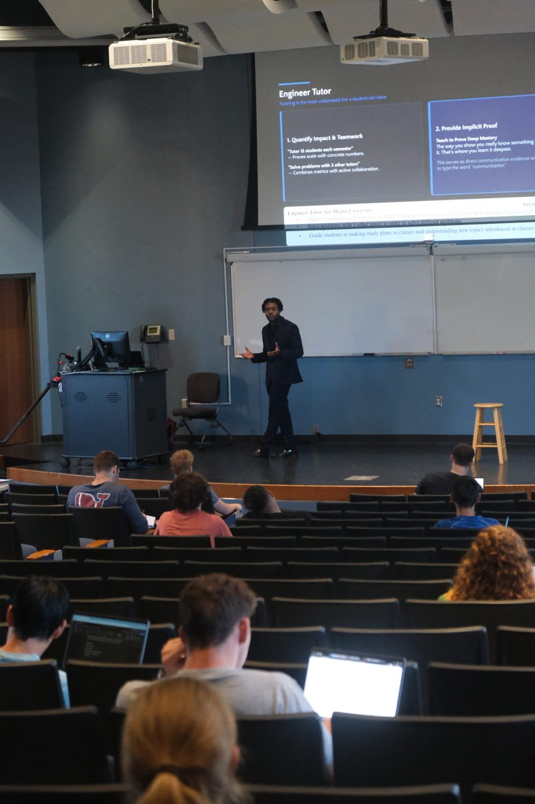

Miami University · CEC · Sept 14, 2026

Thanks for coming out.
Vanwayne Chaney · Computer Engineering ’23
I build AI systems for Ohio businesses and city governments.
The prompt from the talk
Build your career fair game plan
Paste this into ChatGPT, Claude, or Gemini. The free version is fine.
You are helping me prepare for an engineering career fair. I want to walk up to the right tables with something specific to say, instead of wandering and saying "so what do you guys do?" HERE IS ME: [Paste your resume here. If you don't have one yet, just list: your major, your year, the classes and projects you've actually done, any tools you can use — MATLAB, SolidWorks, C#, Python, AutoCAD, Excel, whatever — and any jobs, internships, co-ops, research, or clubs.] WHAT I WANT: - Work setup: [remote / hybrid / in person — pick one] - Where: [city, state, or "anywhere"] - Type of role: [internship / co-op / full time] - Industries I'd actually be interested in: [list them, or write "not sure"] HERE ARE THE COMPANIES COMING TO MY CAREER FAIR: [Paste the employer list from your school's career fair page. If you don't have one, write "suggest companies that fit" and skip this.] NOW DO THIS: 1. Pick the 8 companies from that list that best fit what I want and what I can actually do. Rank them. Tell me plainly why each one made the list. 2. For each of those 8, give me: - What they actually build or do, in one sentence a normal person understands - Their stated core values, quoted from their own site if you can find them - The specific tools, languages, or systems their engineers use - Which of MY skills line up with that, named specifically - One thing they did recently that I could mention out loud 3. Then write me a 15-second opener for each company. It has to sound like a college student talking, not a press release. Structure it as: I saw you're looking for X, I've done X, here's the thing I built with it. 4. Give me 5 questions THEY are likely to ask me, based on my background, and for each one tell me what a weak answer sounds like and what a strong answer sounds like. 5. Give me 3 questions I should ask THEM that don't sound generic. No "what's the culture like." 6. Last: look at my background and tell me the honest weak spot a recruiter will notice, and the one sentence I should have ready when they poke it. TWO RULES: Do not guess at facts about a company. If you cannot actually look something up — their core values, their tech stack, recent news — write "VERIFY" next to it instead of filling it in. I would rather have five blanks I can go check than one confident sentence that turns out to be wrong when I say it to a recruiter. If that is too much to write at once, do the top 5 companies fully and ask me if I want the rest. FORMAT: one section per company, scannable, no giant paragraphs. I'm reading this on my phone in line.
Check it before you say it out loud. This will confidently invent a core value or a news story that sounds exactly right. Ten seconds on the company’s real site. Quoting something they never said is worse than saying nothing.
Start here
Connect on LinkedIn
I accept every one of you. Message me anytime, this year or in four.
One thing, for the next fair and every interview after it.
Every recruiter is going to ask what you know about AI.
Most people answer with something that sounds good. Tell them what you
built, what broke, and what you did about it. That’s the answer that lands.